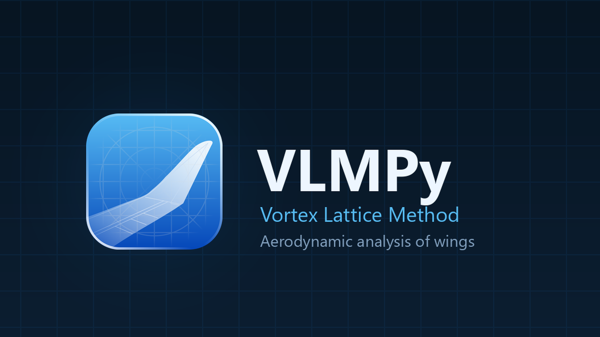
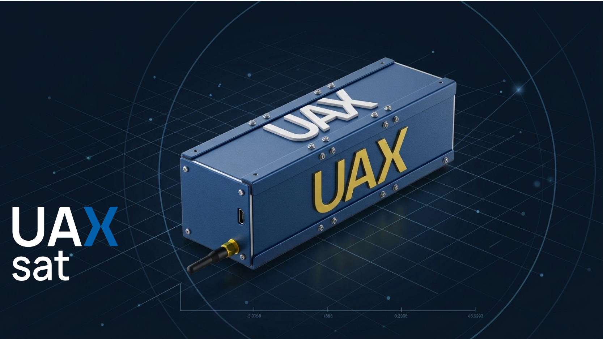
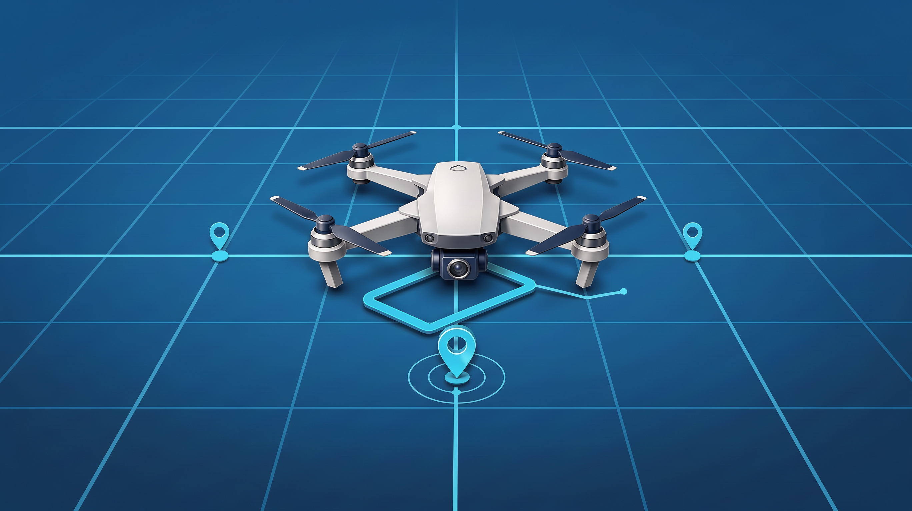

AEROSPACE ENGINEER MADRID, SPAIN
Building the
next iteration
of flight.
I’m Javier Lendínez, an Aerospace Engineer working at the intersection of manufacturing, process industrialisation and engineering software. From the Eurofighter production line to aerodynamic solvers and CubeSat structures, I turn technical challenges into practical solutions.
01Manufacturing
& process engineering
& process engineering
02Aerodynamics
& numerical methods
& numerical methods
03Space systems
& structures
& structures
LOADING AIRCRAFT MODEL
— SCROLL TO EXPLORE
MANUFACTURING ENGINEERING ✳ AERODYNAMICS ✳ SPACE SYSTEMS ✳
PROCESS AUTOMATION ✳ MANUFACTURING ENGINEERING ✳
AERODYNAMICS ✳ SPACE SYSTEMS ✳
01 / MY WORK
Engineering work,
under the surface.
Projects in aerodynamic software, satellite systems, and manufacturing, with aircraft design, flight dynamics, propulsion, rotorcraft, mission planning, and structural analysis.


ENGINEERING HIGHLIGHTS
From definition
to execution.
Three connected domains, supported by project and role evidence rather than unverified performance claims.
VLMPy
Public Python Vortex Lattice Method application with documented geometry, distributions, and reference comparisons.
UAXSat IV
3U student satellite programme: team leadership, structural design, composites, and integration.
Manufacturing engineering
Production support, 3D work orders, process improvement, and reporting automation in aerospace environments.
02 / OPEN SOURCE & PERSONAL PROJECTS
Every repo has
a story.
Explore my public GitHub repositories. Open any project to read its integrated wiki, documentation, technical overview and links.
Loading public repositories from GitHub…
Repository data and project documentation are sourced from
GitHub.View all on GitHub
03 / CAREER
Where engineering
meets execution.
Industrial production, process improvement and hands-on aerospace design — each role has shaped how I approach engineering.
ENGINEERING DESIGN → MANUFACTURING → PROCESS IMPROVEMENT → SOFTWARE TOOLS
JUN 2025 — PRESENT CURRENT
ALTEN · Getafe, Spain
Manufacturing & Process Engineer
Supporting Airbus Defence and Space’s Eurofighter programme, focusing on production support, 3D work orders and industrialisation for the Final Assembly Line.
- Generate, modify and validate 3D work orders using CMS / CATIA Manufacturing Solutions.
- Review manufacturing documentation and assembly instructions, supporting quality, safety and traceability.
- Develop build processes, analyse production data and automate repetitive reporting with Excel and VBA.
- Support shop-floor issue resolution, change management and continuous improvement.
JAN 2025 — MAY 2025
ACCENTURE · Getafe, Spain
Manufacturing & Operations Engineer — Internship
Production support across Eurofighter and RHW final assembly, and MRO activities for Eurofighter, F-5 and Harrier programmes.
- Tracked project scope, planning, costs, deliverables, actions and milestones.
- Defined and monitored KPIs and produced weekly production and risk reports.
- Built Excel/VBA report automations to improve efficiency and traceability.
MAR 2023 — NOV 2024
UAX BLUEJAY PROGRAMME · Madrid / León, Spain
Team Leader & Design Engineer
Coordinated technical work and integration for a 3U CubeSat programme, contributing to structural design, manufacturing and flight-test activities.
- Designed structural elements using composite materials, 3D printing and CNC manufacturing.
- Coordinated team tasks, software, instrumentation and system validation.
JUN 2023 — JUL 2023
ELA AVIACIÓN · Madrid, Spain
Flight Systems Design Engineer — Internship
Preliminary aircraft and flight-system design, including aerodynamic surfaces, fixed-wing aircraft and autogyro concepts.
- Estimated aircraft weight and performance and assessed stability and handling qualities.
- Produced preliminary geometry and technical calculations under time constraints.
04 / ABOUT ME
Engineering is
more than the model.
I’m Javier Lendínez, an aerospace engineer focused on connecting engineering intent with how a product is built, tested, and improved.
I currently support Airbus Defence and Space’s Eurofighter Final Assembly Line through ALTEN. My work spans CMS/CATIA 3D work orders, assembly documentation, build-process development, traceability, and shop-floor issue resolution. I also use production data and Excel/VBA automation to support recurring reporting and operational decisions.
Previously, at Accenture, I supported Eurofighter and RHW final assembly and MRO activities for Eurofighter, F-5, and Harrier programmes. I tracked scope, milestones, risks, and KPIs, and built reporting automations that improved efficiency and traceability.
My aerospace work also includes leading design and integration tasks for a 3U CubeSat, with structural design, composites, 3D printing, and CNC manufacturing. For my final-year project, I developed VLMPy, a Python Vortex Lattice Method tool for lifting-surface analysis; I received highest honours for the project.
I’m now pursuing an M.Sc. in Aeronautical Engineering. Outside work, I served as President of UAX AeroClub, contributing to aeromodelling, aircraft builds, and experimental flight activities.
Explore my GitHub05 / GET IN TOUCH
Have a challenge
worth solving?
I’m always interested in engineering, aerospace technology and opportunities to build better processes and systems.